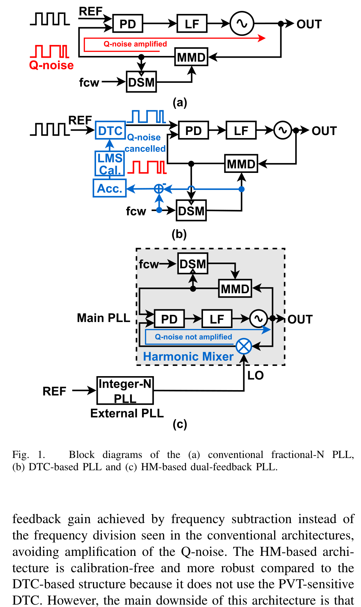
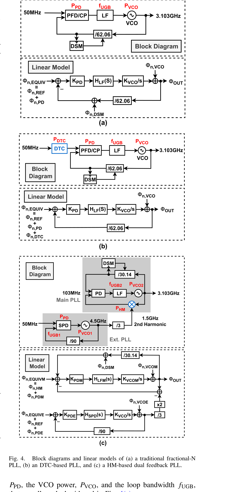
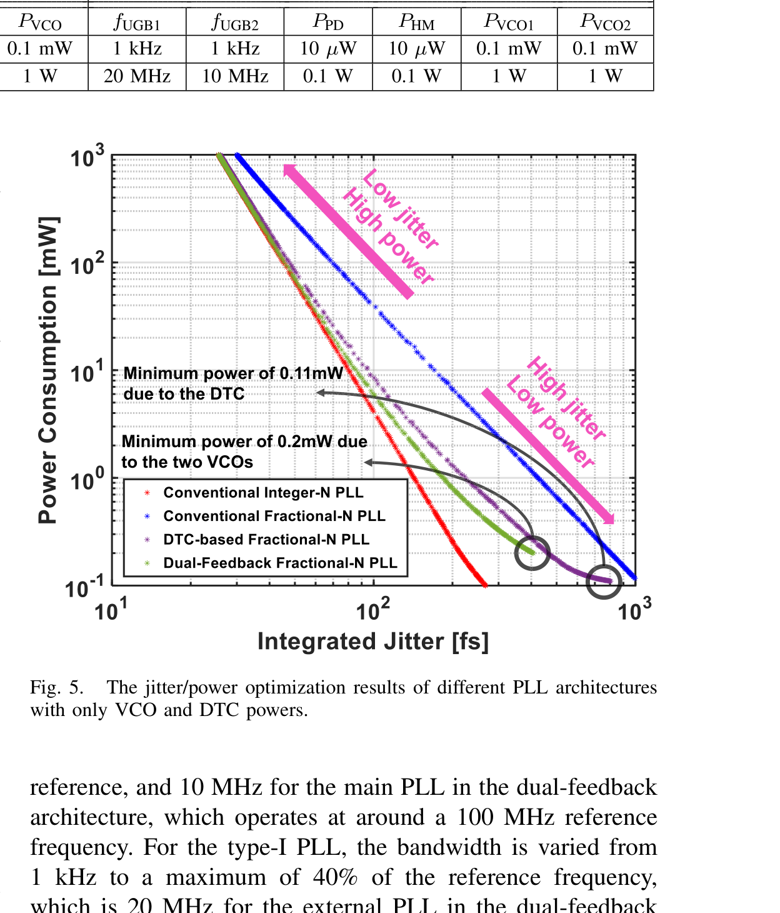
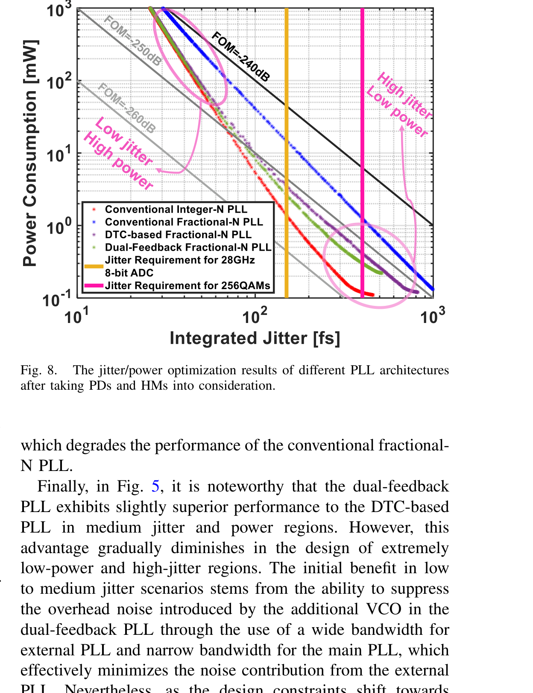
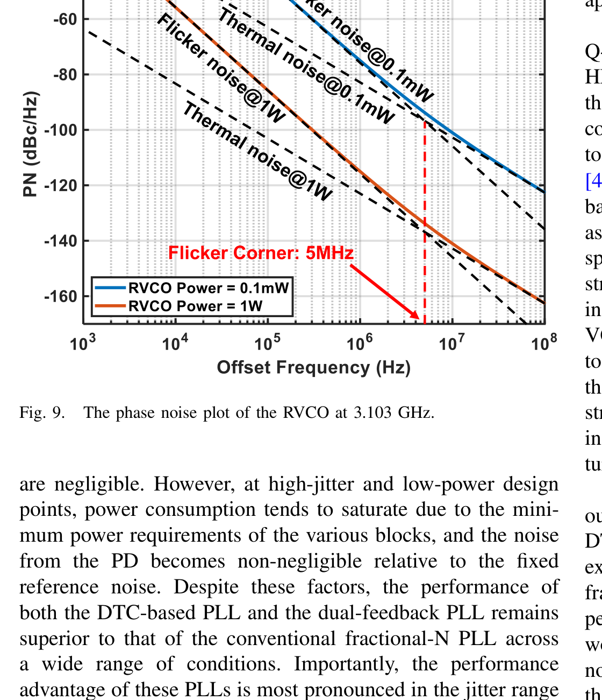
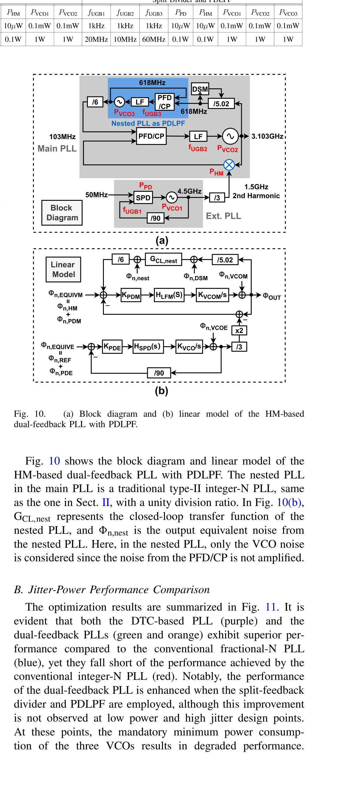
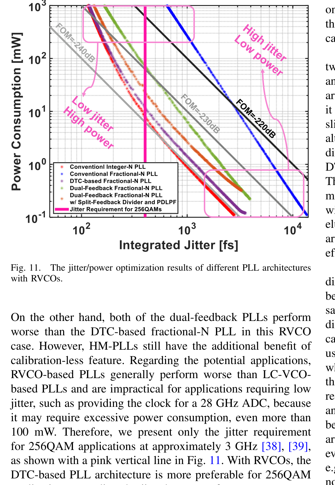

Optimization of DTC-Based and Harmonic-Mixer-Based Fractional-N PLLs: Comparative Analysis of Jitter and Power Trade-Offs 読書ノート
Yuyang Zhu, Masaru Osada, Haoming Zhang, Tetsuya Iizuka, IEEE Transactions on Circuits and Systems—I: Regular Papers, vol. 72, no. 8, pp. 3872–3885, Aug. 2025.（オープンアクセス、CC BY 4.0）
著者に長田将さん（先行博論の著者）と飯塚教授本人が入っている、飯塚研の直近の論文。図は本文 PDF（参考論文/）から切り出したもの。個人の学習用。
0. この論文を超ざっくり
NSGA-II（多目的進化アルゴリズム）を使って、Q-noise対策の異なる2つのFractional-N PLLアーキテクチャ——DTCベースとHMベースDual-Feedback——の「ジッタ vs 消費電力」の最適トレードオフを数値的に求め、比較した論文。
結論だけ先に言うと：LC-VCOならHMベースDual-Feedbackがわずかに有利、リングVCO（RVCO）ならDTCベースが有利という、VCOの種類によって逆転する結果が出た。
これだけ覚えて次へ
「どっちが優れているか」は一概には言えず、VCOの種類（LCかリングか）で答えが変わる。この論文はその条件分けを初めて定量的に示した。
1. 背景：2つのQ-noise対策アーキテクチャ
Fractional-N PLLは分周器の帰還路にΔΣ変調器（DSM）を使うため、量子化ノイズ（Q-noise）が帰還ゲイン（÷N）で N 倍に増幅されてしまう（長田博論ノートで扱っている話そのもの）。この論文が比較する2つの対策は：

(b) DTCベース
- DTC（Digital-to-Time Converter）が基準クロック側に遅延を作り、DSM由来の位相誤差を直接打ち消す。
- DTCはPVT変動に弱く、LMSアルゴリズムなどによる線形性・ゲインのキャリブレーションが必須（回路・収束時間が余分にかかる）。
(c) HMベースDual-Feedback
- 高調波ミキサ（HM）で「周波数の引き算」を行い、帰還ゲインを1にする——割り算(÷N)ではないのでQ-noiseが増幅されない。
- キャリブレーション不要で頑健だが、HM用のLO信号を作る外部PLLが1つ余分に必要（＝主PLL＋外部PLLの2ループ構成）。
長田博論との関係
(c)のHMベースDual-Feedback構成は、まさに長田博論ノート第3章の主提案そのもの（Osada et al., ISSCC-SSCL 2020, 論文中の参照[14]）。この論文はそれとDTCベースを、初めて同じ土俵（NSGA-IIによる数値最適化）で定量比較している。
2. 手法：NSGA-IIによる多目的最適化
なぜ手計算ではなくアルゴリズムを使うのか
PLLのアーキテクチャが複雑になるほど、決定すべき変数（各ブロックの消費電力、ループ帯域幅など）が増え、ジッタと電力の関係を近似式だけで見通すのが難しくなる。そこでMOEA（多目的進化アルゴリズム）、具体的にはNSGA-II（Non-dominated Sorting Genetic Algorithm II）を使い、「ジッタを最小化」「電力を最小化」という相反する2目的を同時に最適化する。
- 決定変数（染色体）：各ブロックの消費電力（VCO・DTC・PD・HMなど）とループ帯域幅 $f_\text{UGB}$。
- 目的関数：積分RMSジッタ $\sigma_j$ と総消費電力 $P_\text{tot}$（の2つ）。
- 出力は単一の最適解ではなくパレート最適解の集合——ジッタ重視〜電力重視まで幅を持った「最良のトレードオフ曲線」。
妥当性検証として、まず単純なInteger-N PLLをNSGA-IIで最適化し、Razavi(2021)の近似計算式ベースの結果と比較。300世代（個体数500）でよく一致することを確認してから、本題のDTCベース・HMベース比較に進んでいる。Matlabで5分弱で計算が終わる、と書かれている。
matlab/ フォルダとの関係（推測）
このリポジトリの matlab/NSGA-II_for_DTC_onlyVCO/ や matlab/TCAS_DATA_CODE/FIG*/{DTC,Frac,HM,...}/ は、フォルダ名（TCAS = この論文の掲載誌）・図番号（FIG5, FIG8 など）から見て、この論文の図5・8・9・11を再現するための実装そのものである可能性が高い。もしこの先マスターがNSGA-IIコードを読み書きするなら、この論文の式(1)〜(20)がその元ネタになっているはず。
3. LC-VCOでの比較（Sec. III）
基準周波数50 MHz、出力周波数3.103 GHzで統一し、Integer-N・従来Fractional-N・DTCベース・HMベースDual-Feedbackの4アーキテクチャを比較。

Dual-Feedback (c) は外部PLL（4.5 GHz、÷3でLO生成）＋主PLL（103 MHz入力）の2ループで、6個の決定変数（$f_\text{UGB1}, f_\text{UGB2}, P_\text{VCO1}, P_\text{VCO2}, P_\text{PD}, P_\text{HM}$）を持つ、と一番変数が多い。
結果


- DTCベース・HMベースDual-Feedbackは、どのジッタ・電力条件でも従来Fractional-Nより明確に優れる。
- Dual-FeedbackはDTCベースよりわずかに良い——特に中程度のジッタ・電力域（100〜200 fs付近、実用上重要な域）で差が目立つ。ただし低電力・高ジッタ域ではその差はほぼ消える。
- どちらもConventional Integer-N PLLには届かない（Q-noiseが完全にゼロにはならないため）。
なぜDual-Feedbackが（わずかに）有利なのか
外部PLLを広帯域・主PLLを狭帯域に設計できるため、①主PLLの狭帯域化でDSMのQ-noiseを十分に抑えられる、②外部PLLの広帯域化と主PLLのローパス特性で、外部PLL自身のノイズも抑えられる——という「2段構えのフィルタリング」が効く。ただし低電力域では両VCOとも最低消費電力に張り付き、この余裕がなくなって優位性が薄れる。
4. リングVCO（RVCO）での比較（Sec. IV）
MIMOなど複数PLLが必要な用途ではRVCOが省面積で好まれる。しかしRVCOはLC-VCOよりノイズが大きく、特に低オフセット周波数でのフリッカーノイズ（$-30$ dB/decの傾き）が無視できない。

RVCOのノイズが大きい分、最適帯域幅は広く取る必要がある。そこでHMベースDual-Feedbackには、長田博論第5章の技術であるPDLPF（Phase-Domain Low-Pass Filtering、nested-PLL）を追加した構成（Osada et al., JSSC 2024, 参照[15]）も比較に加えている。


- PDLPF＋split-feedback dividerを足すとDual-Feedback自体の性能は改善するが、それでもDTCベースには届かない。
- RVCOではLC-VCOの場合と優劣が逆転する。
なぜ逆転するのか
RVCOはノイズが大きいので最適帯域幅が広がる。Dual-Feedbackの追加ノイズ源は「帯域幅の4乗に比例して悪化する、整形されたQ-noise」であり、帯域拡大に弱い。一方DTCベースの追加ノイズ（DTC自身の熱雑音）はフラットな白色雑音なので、帯域が広がっても相対的に悪化しにくい。この非対称性がRVCOでの逆転を生む。
5. マスターの卒論との関係
この論文は先行研究というより、同じ研究室（飯塚研）の直近の姉妹研究——長田さん自身とマスターの指導教員（飯塚教授）が著者に入っている。マスターの卒論テーマ（HMベース／Dual-Feedback構成、低雑音・広チューニングレンジPLL）に直結する内容が多い。
- VCO選択による優劣の逆転が定量化されている——「LC-VCOならDual-Feedbackが（わずかに）有利、RVCOならDTCベースが有利」という結果は、卒論でVCOの選び方や性能限界を議論する際にそのまま論拠として使える。
- 雑音源の切り分けが整理されている——外部PLLノイズ・DSMのQ-noise・主PLL VCOノイズ・HM自身の熱雑音（式14〜16）という整理は、卒論の雑音バジェット表を作るときにそのまま転用できる形。
- Q-noiseと電力の近似関係（式17・18）——AM-GM不等式を使って「最適設計ではPLL消費電力がジッタの$-2.5$乗に比例する」という近似を導出している。これは従来Fractional-N PLLに対する式だが、同様の手法をDual-Feedbackに適用すれば、卒論の設計指針を式の形で示せるかもしれない。
- NSGA-IIのコード基盤——
matlab/配下の実装がこの論文の再現コードだとすると、決定変数の設定範囲（Table II・III）や仮定した雑音レベル（式14〜16、-160/-170/-140 dBc/Hz@1mWなど）は、そのままシミュレーションの初期値・妥当性チェックに使える。
6. 深掘り価値がある箇所 / 飛ばしていい箇所
深掘りする価値あり
- Sec. III-B・Sec. IV-Bの定性的な議論（Fig.5〜6、Fig.8、Fig.11の「なぜこの傾向になるか」の説明部分）。卒論の考察パートの書き方の参考になる。
- 式(1)〜(16)の雑音モデル定義（VCO位相雑音、DSMノイズ、PD/DTC/HMの熱雑音の仮定値）。数値そのものを卒論のシミュレーション設定に流用できる可能性が高い。
- Table II・III（決定変数の範囲設定）。NSGA-IIコードを触るなら必読。
飛ばしてよい
- Fig.6の4分割・位相雑音プロットの細部（傾向はFig.5の説明で足りる）。
- Sec. IIのNSGA-IIアルゴリズム自体の一般論（dominance/crowdingの仕組みなど）——コードを自分で書き換えない限り不要。
- 参考文献リスト・著者紹介。
7. 用語・前提の補足
| 用語 | 意味 |
|---|---|
| MOEA | Multi-Objective Evolutionary Algorithm（多目的進化アルゴリズム）。複数の相反する目的を同時に最適化する遺伝的アルゴリズムの総称。 |
| NSGA-II | MOEAの代表的手法。非優越ソート＋混雑度（crowding）でパレート最適解の多様性を保ちながら世代を進める。 |
| パレート最適解 | 「一方の目的を改善すると必ずもう一方が悪化する」解の集合。単一の正解ではなく、トレードオフ曲線として得られる。 |
| FoM（Figure of Merit） | 式(2)：$\mathrm{FoM}=10\log\dfrac{f_\text{OUT}^2}{f^2 S_{n,\text{VCO}}(f)P_\text{VCO}}$。位相雑音と電力を1つの指標にまとめたもの。値が大きいほど良い。 |
| SPD（Sampling Phase Detector） | サンプリング型位相検出器。式(12)のようなsinc特性（$\sin(\pi f T_\text{CK})/(\pi f T_\text{CK})$）を持つ。Dual-Feedbackの外部PLL（type-I）で使われる。 |
| PDLPF | Phase-Domain Low-Pass Filtering。nested-PLL（内側にもう1つPLLを入れる）で、主PLLの帰還路のノイズをさらにフィルタする技術。長田博論第5章の技術。 |
| flicker corner | 白色雑音とフリッカー雑音のパワーが等しくなる周波数。この論文ではRVCOについて5 MHzと仮定。 |